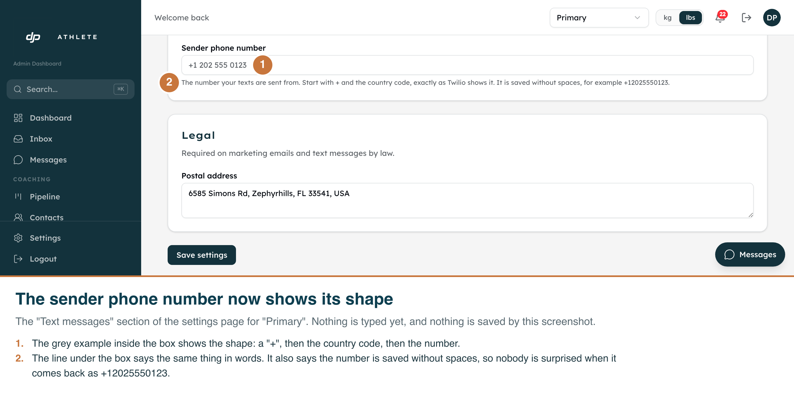
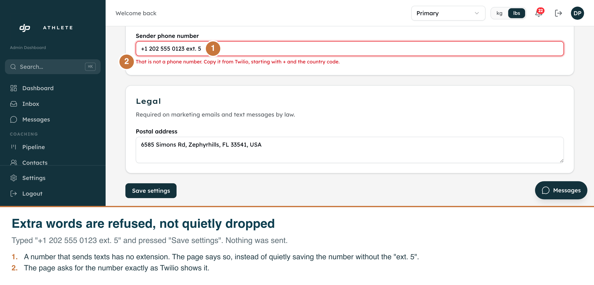

G33 — the sender phone number is saved the way Twilio sends it
Three states of the "Text messages" section on /admin/businesses/<id>,
captured in the real running app on the real route, signed in on the dev clone, business "Primary".
Annotations are burned into each PNG. Captured 2026-09-25 by
scripts/capture-g33-sms-sender-phone-screenshots.mjs.
What these shots are, and are not
Nothing was saved to take them. All three are refusals the form makes before it
sends anything. The script listens for the save request and fails if one goes out. None did.
Light only. The admin screens have no working dark mode, so there is no dark shot.
The window is short (1440 × 500) on purpose. The field directly above this one,
"Messaging service ID", holds the dev clone's placeholder value, which does not belong in a
screenshot. A short window lets the phone field sit under the header with that row out of view.
Not captured: "that number is already used by another business". Reaching it needs two
businesses on the shared dev database to claim one number. The route and database tests cover it instead.

1 · The empty field shows its shape
A grey example inside the box, and a line underneath saying to start with + and the country code,
exactly as Twilio shows it. It also says the number is saved without spaces.
2 · A number with no country code is not saved
"(202) 555-0123" is refused beside the field. Saved like that, a text coming in to the number
would never be matched to this business. The app does not guess the country: guessing "US" would
file a Mexico City number such as 55 1234 5678 under +1.

3 · Extra words are refused, not quietly dropped
"+1 202 555 0123 ext. 5" is refused. Without the check, the phone-number library would drop the
"ext. 5" silently and save a shorter number than the one typed.